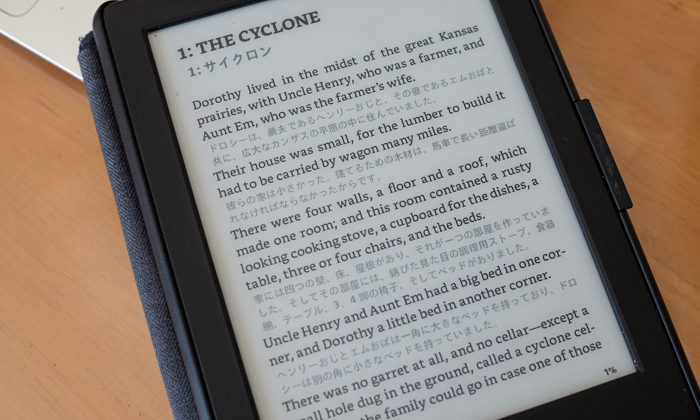

対訳本の電子書籍リーダ用データ
ここでは、英文とその対訳文を並べて読める書籍の電子書籍リーダ用のファイルを公開しています。
原著の英文の各文のすぐ下に訳文が表示されるので、解釈に困った時にも訳文を参照して、意味を把握することができます。それでいて、訳文は目立たない色になっているので、英文だけを注視して読み進めていくことができます。

EPUBファイル
以下のEPUBファイルをダウンロードして利用してください。ほとんどの電子書籍はEPUB形式のデータに対応しています。
- The Wonderful Wizard of Oz
- Peter and Wendy
- Anne of Green Gables
- Anne of the Island
- Anne of Avonlea
- Anne of Windy Poplars
- Anne’s House of Dreams
- Anne of Ingleside
- Rainbow Valley
- Rilla of Ingleside
- The Adventures of Tom Sawyer
- Adventures of Huckleberry Finn
- Adventures of Sherlock Holmes
- The Memoirs of Sherlock Holmes
- The Return of Sherlock Holmes
- The Old Man and the Sea
- Little Women
- The Great Gatsby
Kindleの場合、端末に紐づけられたSend-to-kindleのメールアドレスにEPUBファイルを添付して送ると、AZW3形式に変換されてその端末に配信されます。
Kindle用ポップアップ辞書
Kindle実機をお使いの場合、英文読解用に最適化した英和辞書も使ってみて下さい。読解中に知らない単語やフレーズが合った場合に、その意味を調べやすくなります。Kindle標準の英和辞書よりも収録語数も語義数も上回っています。こちらのMOBIファイルをダウンロードして、Kindleのdictionariesディレクトリに置くと、使えるようになります。
原文と翻訳について
ここで配布している作品の原文は既に著作権が切れてパブリックドメインになっているので、自由に再配布して構いません。また、翻訳はChatGPTに自動生成させているので、訳文の著作権の問題もありません。
ChatGPTに翻訳作業をさせるにあたっては、文の単位で翻訳させるのではなく、段落単位で翻訳させています。また、該当の段落だけではなく、周辺の段落も参考情報として与えています。結果として、文脈も加味した、人間に迫る翻訳精度が実現できています。